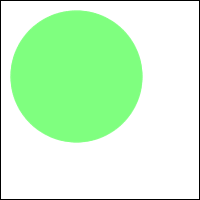
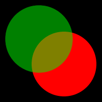
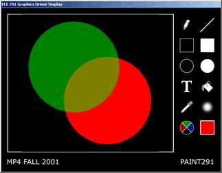

You've tackled text mode video, and now it's time to move on to bigger and better things. Enter high resolution graphics.
The interface to the High Resolution Graphics Library is fairly simple:
Here's a few notes about the library:
This library is rather complicated in function to give you an interface as similar as possible to what assembly has always used. Due to the way it functions, however, you do get some perks. What you have to do to use it is the following:
In any DOS window you wish to run your assembly graphics program, run ex291. ex291 reads the environment variable EX291 to determine the keyboard and mouse settings, as well as determine whether the program will be run in full-screen mode or windowed mode. Full-screen mode is what we will require for handins. Windowed mode allows you to debug - you'll get both the graphics window and the debug window.
If you want to switch from one mode to another, or for any reason wish to remove the driver, simply run it again, and it will uninstall. It will tell you if it successfully installed or uninstalled, so you will know its status.
If something goes horribly wrong, press CTRL-ALT-DEL and choose the task manager. Tell the ECE 291 Display Driver to exit (forcibly if necessary). You will need to restart the graphics driver (not the machine) if this happens.
The EX291 environment variable, like the BLASTER environment variable used by old SoundBlasters, contains several different options that can be used to set what resources EX291 uses and on what ports. Seperate multiple options with spaces. The environment variable must be set _before_ running ex291.com!
w=windowed/S=fullscreen. Selects whether EX291 will fullscreen the application window when switching into graphics mode. Fullscreen is faster, windowed allows for debugging in the Command Prompt window.
x=IRQ virtual keyboard uses, yyy=I/O port virtual keyboard uses (in hex). The virtual keyboard is used when a key is pressed when the graphics window has focus (or when EX291 is running fullscreen). It acts identically to the normal keyboard, only it uses a different IRQ and I/O port to allow for debugging.
z=IRQ virtual mouse uses. In graphics mode, EX291 overrides the normal mouse driver with its own internal functions. To do this, it needs an IRQ to use internally.
Select IRQs and I/O ports for these options which the application doesn't need for other purposes and the hardware hasn't already taken (eg, don't try to put the virtual keyboard on IRQ1: it will conflict with the hardware IRQ port and cause unpredictable behavior).
Examples:
EX291=w K7,300 M12 - windowed, keyboard on IRQ7, port 300h, mouse on
IRQ12
EX291=S K10,301 M5 - full screen, keyboard on IRQ10 (high IRQ!),
port 301h, mouse on IRQ5
Unfortunately, as is often the case with the first round of any software, there are some problems with the library. So here are some of the things that we'ver heard cause problems, so you can avoid them. Or at least, you can know that we know it may crash when you do them. Or something.
Now that you know how the library works, it's time to start using it.
There are a few image buffers that you will be working with in this MP:
First, you draw to the overlay buffer. This buffer is then alpha composed onto the canvas buffer, and the result it is written back to the canvas buffer. Finally, the canvas buffer is copied onto the screen buffer so you can see what you are drawing. In the function descriptions, the DestOff parameter is a pointer to the beginning of one of these three buffers. Remember that the beginning of the buffer is point (0,0) in the buffer. Here is an example of drawing a green circle with half opacity to a red circle with full opacity:
| Step 1: Circle is drawn to overlay buffer (outlined - everything other than circle is transparent) |
 |
| Step 2: Overlay buffer is alpha composed onto canvas buffer |
+ =  |
| Step 3: Canvas buffer is copied to screen buffer |
==>  |
Blitting is conceptually easy. You make a copy of an image (or part of an image) in another place. You do it really fast. This is what allows you to draw a mouse cursor, or characters of a font, or just about anything you see in a graphical user environment.
There's a caveat to a general blitting function: the widths of the source and destination images aren't usually the same. In this MP, this situation includes (but is not limited to) drawing the 480x400 canvas to the 640x480 screen. In this case, the source width corresponds to the width you want to draw. The picture below shows the canvas being drawn on the screen.
Once we find the address corresponding to the upper-left pixel of the canvas in memory and the address for the upper-left pixel of the destination of the canvas on the screen, we're almost good to go.
For this example, let's say that the offset of the upper-left pixel of the destination of the canvas is 1000. What about the offset of the pixel to the right of the upper-left pixel? If you said 1004, you're right. You're moving over one pixel, and since each pixel is 4 bytes, you need to move over 4 bytes in memory.
What about the offset of the pixel below the upper-left destination pixel? You need to know the width of the font image in order to answer this question. We know that the width of the screen is 640 pixels. Then, adding the width of the screen (in bytes) to the current offset will give you the offset of the pixel directly below where you're at now. So, the offset of the pixel below the upper-left destination pixel in this case would be 1000 + 640 pixels * 4 bytes / pixel = 3560 bytes.
Now all you need to know is how many rows and columns to copy, and this will vary with each image. For each of the NumRows rows, you'll copy NumColumns pixels out of the source image and place them in the destination image, moving right after each one. When you hit the end of the row in the source image, you'll have to move down to the next row in both the source and destination images, keeping in mind that in the destination image you'll also have to return to the column in which the initial, upper-left pixel resided.
Unlike in MP3, where you were writing directly to video memory, you will now be using double buffering. In double buffering, you create a buffer the size of the screen, do all of your drawing on that buffer, and then write the entire buffer to memory at once. This reduces flicker and provides smooth animation of the objects on the screen. If you've ever played an old-school Nintendo game you should know what flickering is.